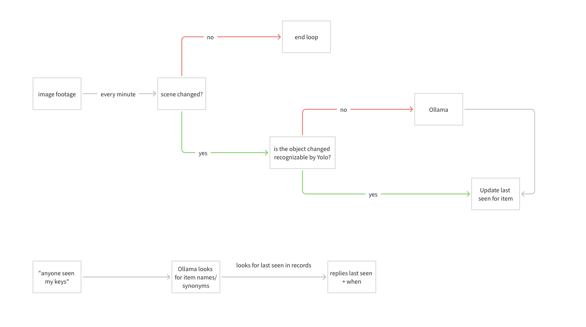
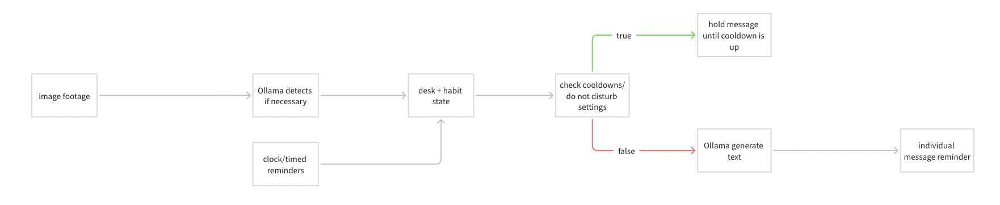

01
Hazards near your computer
Water or risky items too close to the machine, pets on the desk, or strangers and clutter crowding your screen zone — you get a clear heads-up so you can react before damage or distraction.
Desk intelligence · Chat-first
One camera. One calm interface. Desk Talk watches your workspace and turns what it sees into small, timely reminders — so spills, clutter, and lost items never sneak up on you.
Main function
Desk Talk uses a camera and a chat-style interface to track what is on your desk and turn everyday objects into gentle reminders that keep you organized and focused. It can warn you about spills or clutter, remind you to take breaks and stay on track, and help you find items you have misplaced. It works quietly in the background so your workspace stays cleaner, calmer, and easier to run all day.
Three scenes
Each scene matches a real desk moment. The illustrations below are the same storyboard style the product uses to explain behavior — clear, minimal, and focused on the object that matters.
Water or risky items too close to the machine, pets on the desk, or strangers and clutter crowding your screen zone — you get a clear heads-up so you can react before damage or distraction.

Headphones, phone, keys, and other small items appear on your desk — Desk Talk helps you notice what is present, what moved, and what might walk away so your essentials stay organized.

Posture checks, sitting too close to the screen, drinking water, and even watering plants — light nudges tied to how you actually use the desk, not generic alarms.
Under the hood
Three pipelines run behind the chat: one watches for physical risk on the desk, one keeps a light memory of where your things were, and one turns habits and quiet hours into messages you can actually use.
Risk & proximity
Your webcam feed goes through object detection; the system checks distances and how things move over time. When something looks unsafe, it drafts a line in chat so you can fix it before it becomes a spill or a knock-over.

Lost items & “where did it go?”
On a loose schedule the scene is compared to what it looked like before. Recognized objects update a simple “last seen” log; trickier cases get a second pass from the language model. Ask in plain English and you get a straight answer with a time.

Habits & gentle nudges
Camera context and the clock feed a small desk-and-habit state. Before anything pings you, the app respects cooldowns and do-not-disturb; when it is clear to speak, the model writes a short reminder that lands in the right thread.

Interaction
Alerts read like messages from your desk — short, specific, and easy to act on. Below are examples of the kinds of notifications Desk Talk can surface.
Cat too close to your laptop
A pet is in the spill zone near liquids and your screen. Give them a nudge away from the desk.
Phone beside your keyboard
Your phone has been next to the work area for a while. Want to tuck it away for focus?
Last hour · quick recap
Posture flagged 3 times · sat too close to the screen 2 times · hydration reminder sent once. Tap any line to see details.
Examples of summaries you might see after a focused work block:
Why it matters
Most tools shout at you. Desk Talk is built around the idea that your desk already tells a story — objects, distance, light habits. When that story is translated into a calm chat, you get fewer surprises, less damage, and a workspace that feels intentional instead of chaotic. It is the same care you see in premium hardware brands: simple on the surface, serious underneath.
Under the hood: computer vision for what is on the desk, lightweight rules for risk and presence, and a conversational layer so every alert feels human-sized — not a dashboard, not a siren.